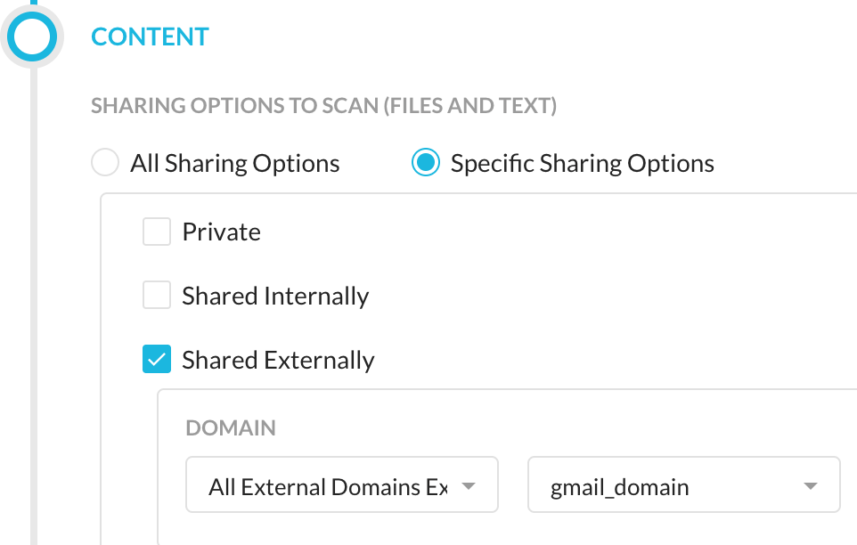
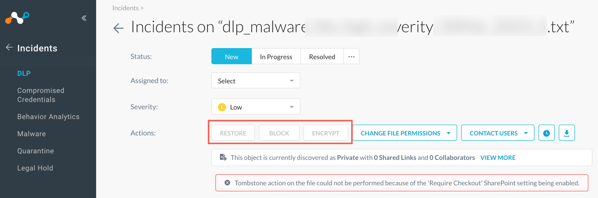

New Features And Enhancements In Release 105.0.0
Here is the list of the new features and enhancements.
JA3 And JA3S Fields
JA3 with JA3S fields are now available for Advanced Analytics (NAA), in the Application Events and Alerts Data Collection.
JA3 with JA3S is a method to fingerprint the TLS negotiation between a client and server. This combined fingerprinting can assist in producing higher fidelity identification of the encrypted communication between a specific client and its server. These fields are available for TLS decrypted traffic.
New SSL Inspection Dashboard
The new addition of SSL Decryption Dashboard allows you to see the inspection rate of all traffic sent to Netskope. In addition, you can review traffic and destinations not inspected, and assess whether there is a business reason to have content inspected for threats, intellectual property, or against specified standards.
New Simplified CISO Dashboard
The “CISO Dashboard - No Period Comparison” dashboard is a simplified version of the “CISO Dashboard” which requires only a single time range parameter to be applied. Note, period over period comparison dashboard filters are not included in this dashboard.
New Private App Tag Field
With this release, the 'Private App Tag' field is added to the Network Events data collection. To learn more: Private App Tags
Support New Policy Option in Cisco Webex Teams
API Data Protection has introduced a new file sharing option in the policy wizard for Cisco Webex Teams - 'All External Domains Except'. This new file sharing option provides users the ability to specify trusted external domains to be excluded from exposure determination and policy enforcement.
|  |
Disable Actions on the Incidents Page for Files with 'Require Check Out' in SharePoint Site
The Netskope tenant UI has disabled the restore, block, and encrypt actions on the Incidents > DLP page for files with 'require check out' option enabled in Microsoft Office 365 SharePoint Sites. In cases when 'require check out' is enabled, a copy of the file will be placed in quarantine, however, the original file will not be deleted.
|  |
Improved Reporting on Malware Files in API Data Protection
API Data Protection dashboard page now includes additional information such as the MD5 checksum and detection engine details if the malware file was detected by Netskope or the SaaS application. Filtering capabilities on the newly available data is also added. To learn more: Improved Reporting on Malware Files in API Data Protection
Deprecation of Malware Instances Table
Netskope has removed the Malware Instances table under Settings > Threat Protection > API-enabled Protection. Users can avail the same functionality to enable malware from Settings > API-enabled Protection > SaaS, enable the malware checkbox under Setup Instance.
Evernote Synthetic Enhancement
Enhanced "From User" and "Instance Id" detection for Evernote browser-based access.
ChatGPT App Connector
ChatGPT dedicated app connector is now available. With this admins can have full visibility and control over sharing of data to the application. The following activities are covered:
Delete
Edit (DLP)
Post (DLP)
Login related activities
Google Drive DLP For Edit Activity
Enhanced Google Drive App to perform DLP for Edit when more than 50 bytes of data is added or pasted into Docs, Sheets or Slides. The primary use case is exfiltration through copy and paste of sensitive information.
Note
This feature is restricted availability and not enabled by default.
iManage App Connector Enhancement
Dedicated iManage app connector for browser-based access. Supports real-time policies for the following activities:
Create
Delete
Upload (DLP)
Download (DLP)
Send
Share
Unshare
Adobe Document Cloud App Category Rename
The application category of the app Adobe Document Cloud is now changed from Collaboration to Business Process Management.
Updated Source Code Classifier Model
Updated the machine learning (ML)-based source code classifier. Incorporating new training data and additional features, higher accuracy and reduced rates of false positive occurrence is achieved.
CFW Availability In China Data Centres
Cloud Firewall (CFW) is now available in China Data Centres.
Note
Please contact your Netskope representative to enable this capability.
Printer Device Control
Endpoint DLP Printer Device Control is available. You can create policies to restrict or allow access to printers based on attributes of the printer or connection.
Printer Device Control Attribute Rename
Printer Device Control events now display the Activity Type as Printer Setup.
Device Control User Notification Template
Endpoint DLP Device Control policies allows administrators to select a custom user notification template. This helps administrators to display custom messages when devices are blocked.
Endpoint DLP Alerts
Endpoint DLP Alerts display the violating application in the Application column.
Transaction Event Field Format Updates
Updated Transaction Event Field Format by:
Adding field x-cs-uri-path right after x-cs-url in Format 3.
Renaming transaction event format 2 field from x-cs-tunnel-src-ip to x-cs-src-ip-egress.
Removed field x-r-cert-san from Transaction Event Format 2.
Values For Transaction Event Fields
Transaction Event fields x-cs-app-cci, x-cs-app-ccl, and x-cs-app-tags are filled with the following criteria:
If app cci and ccl are not found, x-cs-app-cci would be 0, and x-cs-app-ccl would be 'unknown'
If app tags are not found, x-cs-app-tags would be empty.
On-Premises Central Authority Support
You can now connect to the on-prem hosted HSM/key manager to get the proxy emulated certificate signed for TLS decryption without uploading or providing an intermediate certificate/key to Netskope.
GitHub App Notification
GitHub app is now available on the Next Generation API Data Protection platform. Please note the following important points:
The classic version of the GitHub app is now deprecated. New customers can no longer set up a new GitHub app instance on the classic platform. If you need to setup a new instance of GitHub, select the GitHub app available under Next Generation platform.
If you currently use the classic version of the GitHub app, no action required. You should continue to use the classic version that you use today. Netskope will notify you via a banner message on the Netskope tenant UI when you can switch over to the Next Generation app.
Support for ChromeOS
Added support for Android 11 on Chrome OS. To learn more: Netskope Client Supported OS and Platform
Device Classification Logs
Secured Device Classification logs when the Steering Hardening feature flag is enabled.
overrideUserDisableAfterLogin Feature flag
Introduced a feature flag overrideUserDisableAfterLogin to override the user disabling Client after restart or logoff/login. When the flag is enabled and user disables the Client, it automatically enables the Client after the user:
Restarts the system, or
Logoff and login again
Note
The default value of the feature flag is disabled. This feature flag is applicable only for Windows and macOS devices.
Unique Device ID
On the Device page, Unique Device ID is the combination of BIOS SN and Processor ID that can easily get duplicated with other Unique Device ID cloned by the virtual machine(VM) image.
To have a real Unique Device ID, Machine GUID is added to generate a new Unique Device ID. Private Access Client will re-enroll to update Unique Device ID.
Note
This update is available using a tenant-based feature flag.
UI Support for UEBA Sequence Detector
The Standard UEBA policies now support selecting custom applications in policy definition.
UI support for API-connected instances
UEBA supports API-connected instances for predefined policies. With this enhancement, you can select or exclude both Inline and API-connected app instance at the same time for predefined policies.
New Web Category For Generative AI domains
Netskope added a new application and web category for Generative AI domains. This covers traffic to AI apps like ChatGPT, Google Bard, Jasper AI, etc. You can use this category to configure access control in Real-time Protection policies and define Inline Access Control traffic destined to this specific category.
To learn more, see Category Definitions.
Note
This is a Controlled General Availability feature, available to you with reduced scope.
CTEP to IPS Alert Type Change
Netskope renamed the CTEP alert type in Skope IT to IPS.
Integrating Palo Alto Networks WildFire for Cloud Sandbox: New integration guide on how to configure Palo Alto Networks WildFire with Netskope Cloud Sandbox.
Proxy Chaining: Improved the content and structure for Netskope proxy chaining.
Adding the Proxy IP Address to the Proxy Chaining Allowlist: New article on how to add proxy IP addresses to the Netskope Proxy Chaining allowlist.